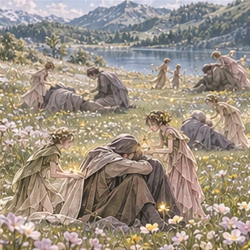
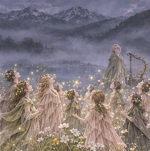
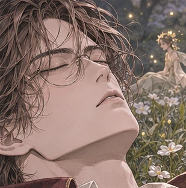

1막 삽화·원문·번역 대조
1막 · 꽃이 핀 골짜기

01 · 저녁의 골짜기와 잠을 이루지 못하는 파우스트
독일어 원문
1. Akt--Anmutige Gegend
Faust auf blumigen Rasen gebettet, ermüdet, unruhig,
schlafsuchend.
Dämmerung.
Geister-Kreis schwebend bewegt, anmutige kleine Gestalten.
ARIEL.
Gesang von Aolsharfen begleitet.
한국어 번역
제1막 · 꽃이 핀 골짜기. 파우스트가 꽃이 핀 풀밭에 누워 있다. 지치고 불안하여 잠을 청한다. 땅거미가 진다. 우아하고 작은 정령들이 허공에서 원을 그리며 움직인다. 아리엘이 바람 하프 소리에 맞춰 노래한다.

02 · 봄꽃이 비처럼 내리는 푸른 들판
독일어 원문
Wenn der Blüten Frühlingsregen
Über alle schwebend sinkt,
Wenn der Felder grüner Segen
Allen Erdgebornen blinkt,한국어 번역
봄꽃이 비처럼 모두에게 내려앉고 푸른 들판이 땅에 태어난 모든 이에게 빛날 때,

03 · 사람의 처지를 가리지 않고 돕는 작은 정령들
독일어 원문
Kleiner Elfen Geistergröße
Eilet, wo sie helfen kann;
Ob er heilig, ob er böse,
Jammert sie der Unglücksmann.
한국어 번역
작은 요정들은 너그러운 마음으로 도울 수 있는 곳에 달려간다. 거룩한 사람이든 악한 사람이든, 불행한 이를 가엾게 여긴다.

04 · 파우스트의 머리맡을 에워싼 정령들을 부르는 아리엘
독일어 원문
Die ihr dies Haupt umschwebt im luft'gen Kreise,
Erzeigt euch hier nach edler Elfen Weise:
Besänftiget des Herzens grimmen Strauß,
Entfernt des Vorwurfs glühend bittre Pfeile,한국어 번역
이 머리 위를 공중에서 돌고 있는 너희여, 요정답게 너그러이 행동하여라. 마음속의 거센 싸움을 가라앉히고, 뜨겁고 쓰라린 자책의 화살을 거두어라.

05 · 파우스트의 머리를 서늘한 풀밭에 받쳐 주는 정령
독일어 원문
Sein Innres reinigt von erlebtem Graus!
Vier sind die Pausen nächtiger Weile;
Nun ohne Säumen füllt sie freundlich aus!
Erst senkt sein Haupt aufs kühle Polster nieder,한국어 번역
그가 겪은 끔찍한 일에서 그의 마음을 씻어라. 밤에는 네 차례의 쉼이 있다. 지체하지 말고 그 시간을 다정하게 채워라. 먼저 그의 머리를 서늘한 베개에 내려놓아라.

06 · 파우스트의 이마에 닿는 레테의 이슬
독일어 원문
Dann badet ihn im Tau aus Lethes Flut!
Gelenk sind bald die krampferstarrten Glieder,
Wenn er gestärkt dem Tag entgegen ruht.
Vollbringt der Elfen schönste Pflicht:한국어 번역
그러고 나서 망각의 강 레테에서 가져온 이슬로 그를 씻어라. 기운을 되찾아 날이 밝기까지 쉬고 나면 굳은 팔다리도 곧 부드러워지리라. 요정의 가장 아름다운 의무를 다하여라.

07 · 안개가 내려오는 들판 위에서 노래를 잇는 정령들
독일어 원문
Gebt ihn zurück dem heiligen Licht!
CHOR
einzeln, zu zweien und vielen, abwechselnd und gesammelt.
Wenn sich lau die Lüfte füllen
Um den grünumschränkten Plan,
Süße Düfte, Nebelhüllen한국어 번역
그를 신성한 빛으로 돌려보내라! 합창. 한 명씩, 둘씩, 여럿이 번갈아 또는 함께 노래한다. 푸른 풀밭 둘레에 포근한 공기가 차오르면, 달콤한 향기와 안개를

08 · 정령의 노래에 눈을 감기 시작하는 파우스트
독일어 원문
Senkt die Dämmerung heran,
Lispelt leise süßen Frieden,
Wiegt das Herz in Kindesruh
Und den Augen dieses Müden한국어 번역
저녁 어스름이 내려 보낸다. 달콤한 평화를 속삭이고, 마음을 어린아이처럼 조용히 달래어 지친 이의 눈에
09 · 밤하늘에 하나둘 떠오르는 별
독일어 원문
Schließt des Tages Pforte zu.
Nacht ist schon hereingesunken,
Schließt sich heilig Stern an Stern;
Große Lichter, kleine Funken한국어 번역
낮의 문을 닫아 준다. 밤이 내려앉아 별과 별이 성스레 이어진다. 큰 빛과 작은 불꽃이

10 · 나무 너머 호수에 비친 별빛
독일어 원문
Glitzern nah und glänzen fern;
Glitzern hier im See sich spiegelnd,
Glänzen droben klarer Nacht;
Tiefsten Ruhens Glück besiegelnd한국어 번역
가까이서 반짝이고 멀리서 빛난다. 호수에 비쳐 반짝이고 맑은 밤하늘에서 빛난다. 가장 깊은 휴식의 평온을 지켜 주며

11 · 보름달 아래 깊이 잠든 파우스트
독일어 원문
Herrscht des Mondes volle Pracht.
Schon verloschen sind die Stunden,
Hingeschwunden Schmerz und Glück;
Fühl' es vor! Du wirst gesunden;한국어 번역
보름달이 환히 빛난다. 지나간 시간은 사그라들고 고통과 기쁨도 자취를 감췄다. 느껴 보라. 너는 회복할 것이다.

12 · 새벽빛이 닿기 시작하는 골짜기와 언덕
독일어 원문
Traue neuem Tagesblick!
Täler grünen, Hügel schwellen,
Buschen sich zu Schattenruh;
Und in schwanken Silberwellen한국어 번역
새날의 빛을 믿어라. 골짜기가 푸르고 언덕이 솟아 있으며 숲은 그늘 속에 쉰다. 흔들리는 은빛 물결처럼

13 · 은빛 이삭 너머 밝아오는 새벽
독일어 원문
Wogt die Saat der Ernte zu.
Wunsch um Wünsche zu erlangen
Schaue nach dem Glänze dort!
Leise bist du nur umfangen;한국어 번역
곡식이 출렁이며 수확을 향해 무르익는다. 소원을 하나씩 이루고 싶다면 저기 빛나는 곳을 바라보라. 너를 감싼 것은 가볍다.

14 · 잠에서 깨어 손을 움직이는 파우스트
독일어 원문
Schlaf ist Schale: wirf sie fort!
Säume nicht dich zu erdreisten,
Wenn die Menge zaudernd schweift;
Alles kann der Edle leisten,한국어 번역
잠이라는 껍질을 벗어 던져라. 사람들이 망설이며 헤맬 때 과감히 나아가기를 주저하지 마라. 고결한 이는 모든 것을 해낼 수 있다,

15 · 새날의 굉음에 고개를 드는 아리엘
독일어 원문
Der versteht und rasch ergreift.
Ungeheures Getöse verkündet das Herannahen der Sonne.
ARIEL.
Horchet! horcht dem Sturm der Hören!
Tönend wird für Geistesohren
Schon der neue Tag geboren.한국어 번역
뜻을 알아보고 재빨리 붙잡는 사람이라면. 엄청난 굉음이 해가 가까워 오는 것을 알린다. 아리엘. 들어라, 높은 곳의 폭풍 소리를 들어라! 정령들의 귀에는 새날이 소리와 함께 태어난다.

16 · 바위산 사이를 뚫고 들어오는 황금빛
독일어 원문
Felsentore knarren rasselnd,
Phöbus' Räder rollen prasselnd,
Welch Getöse bringt das Licht!
Es trommetet, es posaunet,한국어 번역
바위 문이 요란하게 삐걱이고 태양신 포이보스의 수레바퀴가 요동치며 굴러온다. 빛이 얼마나 큰 굉음을 몰고 오는가! 북과 나팔이 울린다.